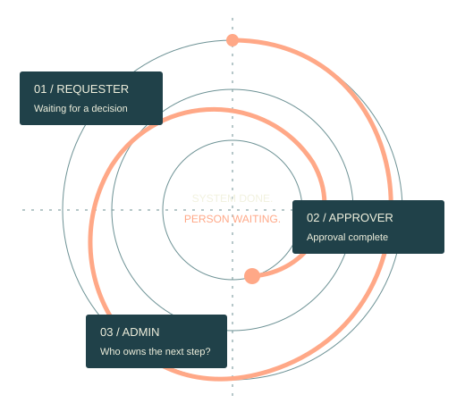

01
Keep Knowledge Local
Track what each actor can access, what they actually saw and which version they last encountered.
Workflow Rehearsal · 01
A workflow can finish in the system and still leave someone waiting. Spiral rehearses the handoffs, one role at a time.

Some work passes between people: a request, an approval, a support case. Each person sees only part of the picture.
A plan can have a gap that nobody notices until the product is built. For example, a manager approves a request, but nothing tells the person who asked.
Spiral is a skill: a folder of instructions you add to an AI agent. Before you build, it walks through the process one person at a time. For each person it tracks what they can see, what they can do and what they are waiting for.
You get a timeline linked back to your documents, a list of what each handoff needs (a handoff is when work passes to the next person), and test scenarios. Spiral keeps what your documents say apart from what it had to assume.
Example. In the project’s made-up example, the plan never says the person who asked gets told after approval. Spiral flags that gap. It calls it a gap in the documents, not a bug in a real app.
The Method
Bring roles, permissions, workflow rules and available artifacts. Spiral identifies missing information as it traces the work.
Track what each actor can access, what they actually saw and which version they last encountered.
Separate a completed action from a delivered message and an accepted responsibility.
Rehearse delay, reassignment and out-of-order events. Name the owner and the route to recovery.
The requester leaves. The approver finishes. The specification never tells the requester what happened.
Read the Full Worked Example →KnownApproval updates the stored status.
UnknownNo requester notification is specified.
Conditional RiskIf the requester never revisits the detail page, they remain uninformed.
Proposed RequirementDefine the authorized notification, delivery failure path and recovery owner.
Explore the ideas behind role-specific knowledge, shared context, coordination and recovery. Use these foundations to ask sharper questions about your workflow. Explore the Research.
Hex Men is a directory of independent projects by Jon Gosier. Each project stands on its own; these are its members.